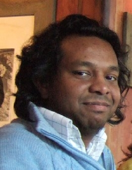

|
Masud Haque
Institut fuer Theoretische Physik TU Dresden, 01062 Dresden, Germany (Zellescher Weg 17, Office 1.19)
Department of Theoretical Physics
Max-Planck-Institut -- PKS
|

Tel. mobile +31-6-1116-0834 Dresden (PKS) email: haque ATT pks.mpg.de Dresden (TUD) email: masudul.haque ATT tu-dresden.de Personal email: masud.haque ATT gmx.de Skype user ID: masud1011 |
Research Area
Condensed Matter Theory --- the study of coherence and correlations in many-particle systems.
Main research themes, present and past:
Most of my papers are available as
Most are on `cond-mat', except for a couple of exceptions, e.g., a q-bio and a cs.LG preprint.
Also, most publications can be seen on my
Spring: Electricity & Magnetism and Special Relativity
Autumn: Intro to Quantum Mechanics and Computational Physics II
Research group in Maynooth:
My former research team (2012 -- 2015) in MPI-PKS Dresden worked on non-equilibrium phenomena in quantum systems. Members at various times:
Junior researchers who worked with me at MPI-PKS Dresden
(alphabetically listed)
Vincenzo Alba (former
postdoc in Andreas
Laeuchli's group) October 2010 - September 2012
Worked on entanglement spectra in 1D and 2D lattice systems.
Arxiv links:
paper 1,
paper 2,
paper 3.
Papers from later collaboration:
paper A.
paper B.
Wouter Beugeling
(postdoc) October 2012 - January 2015.
Worked on statisitcal properties of many-body eigenstates,
motivated by non-equilibrium dynamics (e.g., Eigenstate Thermalization
Hypothesis).
Arxiv links:
paper 1,
paper 2,
paper 3.
Shreyoshi Ghosh / Mondal
(postdoc) September 2012 - December 2013.
Worked on non-equilibrium dynamics of the ``impurity screening
cloud'' (analog of the Kondo cloud) in impurity models.
Arxiv links:
paper 1, paper 2.
Weibin Li (postdoc) 2007-2008. Worked on vortex dynamics in trapped condensates (arxiv link)
Paolo Mazza
(PhD student) August 2014 - July 2015.
Worked on non-equilibrium dynamics in the XXZ chain.
(
arxiv link
)
Alexey Mikaberize (at the time: PhD
student in the MPI-PKS Finite
Systems Department) 2008.
We did some work on
theoretical ecology, not related to my main research.
Based on this work, Alexey moved to a career in
theoretical ecology after his PhD in atomic/laser physics.
Ricardo Pinto (PhD student
with Sergej Flach) 2008.
Worked on non-equilibrium dynamics in 1D lattice models.
(interaction-induced edge localization)
Eoin Quinn
(postdoc) August 2013 - summer 2014.
Worked on dynamics of periodically driven 1D Bose
gas
(
arxiv link
)
V. Ravi Chandra and J.
Bandyopadhyay (former postdocs at MPI-PKS)
Worked with me on entanglement and dynamics in frustrated spin
chains
(arxiv link)
Sthitadhi Roy
(PhD student)
Worked with me on non-equilibrium dynamics in Chern-band models, e.g.,
the Haldane model.
Arxiv links:
paper 1,
paper 2.
Kush Saha (at the time: PhD student
in India)
Visited MPI-PKS September - November 2012 to
work with me.
Explored the Bethe ansatz description of edge-related
eigenstates of the open-boundary Heisenberg chain.
(arxiv link)
Yulia Shchadilova (at the time: PhD student
in Moscow)
Worked with me during multiple visits to MPI-PKS, from summer
2012 until spring 2014.
Explored:
(1) quench dynamics and work distributions in
low-density systems (arxiv
link);
(2) low-density versions of Kondo models
(arxiv
link).
Wladimir Tschischik
initially Diplomarbeit student (April 2011 - March 2012);
continued as PhD student (April 2012 - December 2015)
Worked on non-equilibrium dynamics in Bose-Hubbard systems.
Arxiv links:
paper 1,
paper 2,
paper 3,
paper 4.
Ivana Vidanovic (at the time: PhD student
in Belgrade)
Visited Dresden for several weeks in 2011.
Worked on non-equilibrium dynamics in spinor condensates
(arxiv link)
Jacopo Viti
(postdoc) October 2014 - January 2016.
Worked on non-equilibrium dynamics of unitary transport in
many-fermion systems, after an `inhomogeneous quench'
(
arxiv link
)
Frank Zimmer (postdoc) 2009-2011.
Worked on non-equilibrium dynamics in condensates.
(arxiv link)
Summer research projects with undergraduate students from abroad:
|
Some research topics (outdated)
Brief descriptions of selected research topics. Written around 2012/2013. This is obviously outdated but kept here for nostalgic reasons. Current spectrum of interests has some overlap with this old list, but the focus is more heavily on non-equilibrium physics. |
Took place in Bad Honnef, Germany (Nov. 30-Dec. 3, 2015)
made possible by generous funding from the
Wilhelm und Else Hereaus-Stiftung
.
Workshop website:
599th WEH-Seminar: Isolated Quantum Many-Body Systems out of
Equilibrium: from unitary time evolution to quantum kinetic equations
Co-organizers: Michael Bonitz (Kiel); Stefan Kehrein
(Goettingen).
This workshop brought together theorists addressing non-equilibrum quantum physics from two different perspectives: namely, the perspective of exact unitary dynamics, and that of quantum kinetic descriptions in the framework of the Boltzmann equation or its generalizations.
Workshop on Integrability and its Breaking
Took place in Montreal, Canada (July 13-17, 2015)
at the Centre de Recherches Mathématiques
(Université de Montréal)
Workshop website:
Beyond integrability: The mathematics and physics of integrability and
its breaking in low-dimensional strongly correlated quantum phenomena
Co-organizers: Jean-Sébastien Caux (Amsterdam); Robert Konik (Brookhaven).
Three-week meeting in August 2013.
Co-organizers: J-S Caux (Amsterdam); Tilman Esslinger (Zürich); Corinna Kollath (Geneva/Bonn).
Focus workshop, November 12-16, 2012.
Co-organizers: B. Andrei Bernevig (Princeton), Andreas Läuchli (Innsbruck)
Meeting organized in June 2010.
Co-organizers: Ian Affleck (UBC, Canada); Ulrich Schollwöck (LMU, Munich)
Two weeks, 100+ participants.
Employment trajectory
In summer 2021 I moved back to Dresden, to start work at the Technische Universitaet Dresden.
Until summer 2021, I was a faculty member at Maynooth University, in
Ireland, in the greater Dublin area.
When I joined in 2016, the Department was called the Department of
Mathematical Physics, for reasons unknown to me. Since then it has
been renamed and for some years was called
the Department
of Theoretical Physics.
From late 2006 to early 2016, I was a research scientist at the Max-Planck Institute for the Physics
of Complex Systems
(MPI-PKS) in Dresden, Germany.
I was associated with
the Condensed
Matter Department within MPI-PKS.
For part of my time at MPI-PKS Dresden, I held a ``Distinguished PKS postdoctoral fellow'' position;
one of
three such positions at the MPI-PKS.
Later, as a longer-term Staff Scientist I directed a team of researchers (of
varying sizes at various times), mostly focusing on the physics of
quantum systems out of equilibrium.
My first postdoctoral appointment (Nov 2003 -- Sep 2006) was in Utrecht university, the Netherlands, working with Henk Stoof's group, at the Institute for Theoretical Physics,
I did my Ph.D. at the Physics Department in Rutgers University, New Jersey. I was at Rutgers from Fall 1997 till September 2003. I worked with the Rutgers quantum condensed matter group and my PhD advisor was Andrei E Ruckenstein.
Personal home page: Masud Haque (torun) / Email: masud d0t haque d0t torun ATT gmail dot com